Chapter 6: Docker Advanced
Overview
Objectives
- Understand multi-stage builds and image optimization
- Learn Docker BuildKit features
- Understand Docker overlay filesystem
- Master container resource management
- Configure Docker networking
- Set up and use Docker private registries
Assignment: Create Student's Submission along tutorial
- Student will submit Screen of Docker installation process according to step-by-step from manual.
- Student can use Basic Template Download checklist submission or generate own version.
- check checklist file Check list help
Ref Reading
- docker officail reference
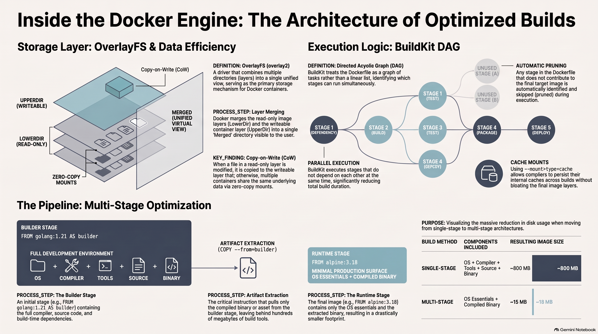
1. Key Advantages of the Overlay Filesystem (OverlayFS / overlay2)
The Overlay Filesystem is a modern union filesystem that combines multiple underlying directories into a single, unified filesystem view. It plays a crucial role in making Docker builds fast, storage-efficient, and lightweight: - Union Directory Layering (lowerdir, upperdir, merged): - lowerdir: Read-only base layers (such as OS images or pre-installed SDKs)
- **upperdir:** The read-write layer where new file changes from a build step are written
- **merged:** The unified mount point where Docker presents the combined filesystem
-
Copy-on-Write (CoW) Efficiency: If a build instruction (RUN, COPY) modifies an existing file, OverlayFS copies the file from lowerdir to upperdir before editing. Unchanged files are never duplicated, drastically saving disk I/O and storage space
-
Instant Layer Mounts: Rather than extracting heavy tarballs or copying full directory trees for each Dockerfile line, Docker simply mounts existing layer directories on host storage (/var/lib/docker/overlay2/)
Workshop 1: Image Optimization
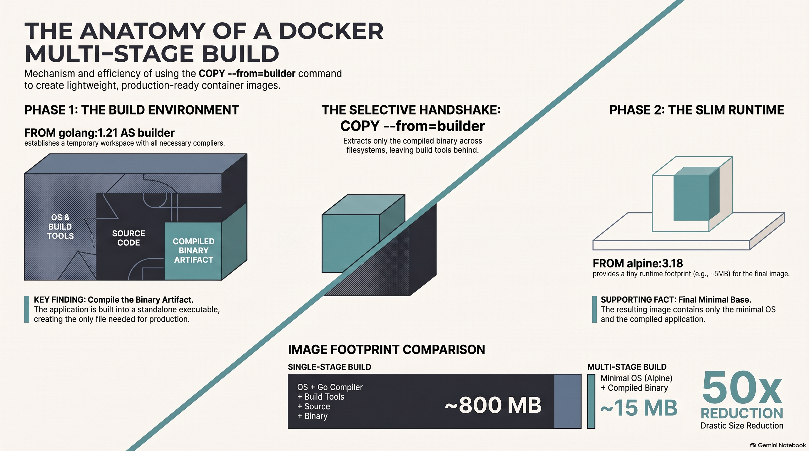
Lab 1.1: Multi-stage Build - Go Application
Step 1: Create project directory
mkdir ~/go-multistage
cd ~/go-multistage
Step 2: Create main.go application
cat > main.go << 'EOF'
package main
import (
"fmt"
"net/http"
"os"
"runtime"
)
func main() {
http.HandleFunc("/", func(w http.ResponseWriter, r *http.Request) {
hostname, _ := os.Hostname()
fmt.Fprintf(w, "Hello from Go container!\n")
fmt.Fprintf(w, "Hostname: %s\n", hostname)
fmt.Fprintf(w, "Go Version: %s\n", runtime.Version())
fmt.Fprintf(w, "OS/Arch: %s/%s\n", runtime.GOOS, runtime.GOARCH)
})
http.HandleFunc("/health", func(w http.ResponseWriter, r *http.Request) {
w.WriteHeader(http.StatusOK)
fmt.Fprintf(w, "OK")
})
fmt.Println("Server starting on :8080")
http.ListenAndServe(":8080", nil)
}
EOF
Step 3: Create single-stage Dockerfile (show problem)
cat > Dockerfile.single << 'EOF'
FROM golang:1.21
WORKDIR /app
COPY main.go .
RUN go build -o server main.go
EXPOSE 8080
CMD ["./server"]
EOF
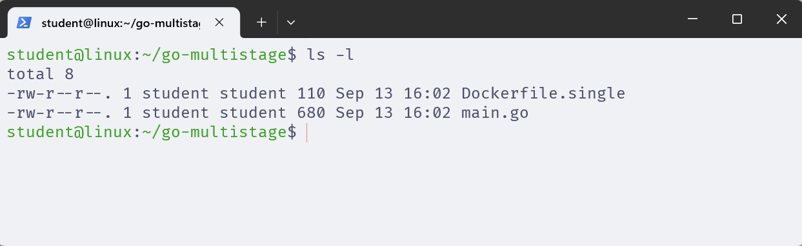
Step 4: Build and check image size
docker build -t go-single -f Dockerfile.single .
docker images go-single
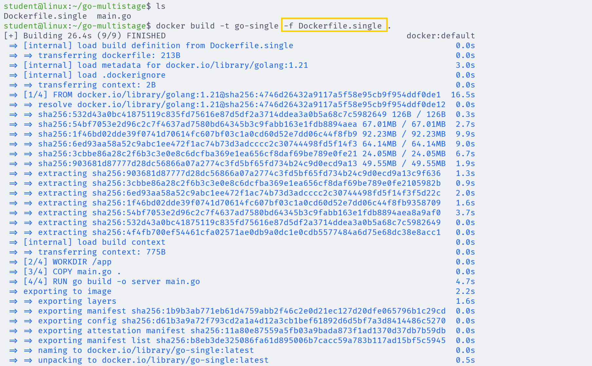
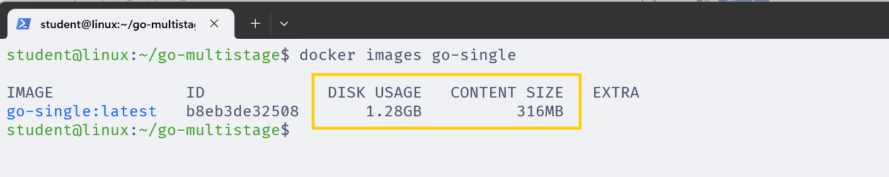
Image Sizes
| Metric | Size | What it means |
|---|---|---|
| DISK USAGE | 1.28 GB | Total space the image occupies on disk (uncompressed layers + metadata) |
| CONTENT SIZE | 316 MB | Actual size of the image content (compressed/sum of layer content) |
Key Difference
- DISK USAGE (1.28 GB) — The real amount of disk space consumed locally. This includes all layers unpacked on your filesystem.
- CONTENT SIZE (316 MB) — The size of the image as it would be pushed/pulled from a registry (compressed layers). This is what you'd see on Docker Hub.
Note: Single-stage image is 1.2GB because it includes Go compiler and all build tools
Step 5: Create multi-stage Dockerfile
cat > Dockerfile << 'EOF'
# Build stage
FROM golang:1.21 AS builder
WORKDIR /app
COPY main.go .
RUN CGO_ENABLED=0 GOOS=linux go build -o server main.go
# Final stage
FROM alpine:3.18
RUN apk --no-cache add ca-certificates
WORKDIR /root/
COPY --from=builder /app/server .
EXPOSE 8080
CMD ["./server"]
EOF
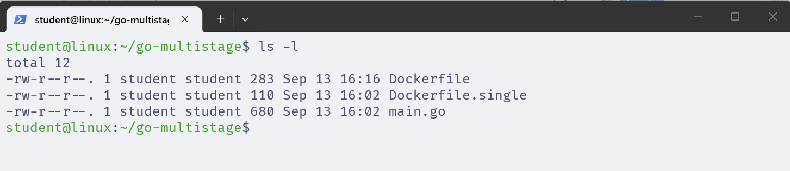
Step 6: Build and compare image sizes
docker build -t go-multi .
docker images | grep go-
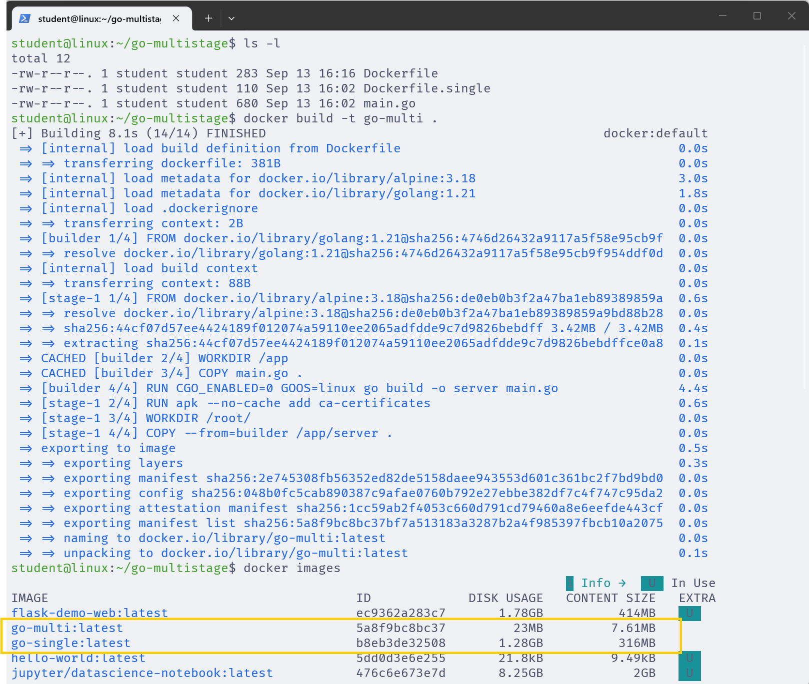
Note: Multi-stage image is 23MB - over 5x smaller!
Step 7: Verify application works
docker run -d --name go-app -p 8080:8080 go-multi
curl http://localhost:8080
docker stop go-app
docker rm go-app
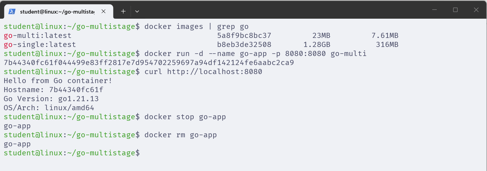
Lab 1.2: BuildKit Features
Step 1: Enable BuildKit
export DOCKER_BUILDKIT=1
docker build --version
Step 2: Create Dockerfile with cache mounts
cat > Dockerfile.buildkit << 'EOF'
FROM golang:1.21 AS builder
WORKDIR /app
# Use cache mount for Go module cache
COPY main.go .
RUN --mount=type=cache,target=/go/pkg/mod \
--mount=type=cache,target=/root/.cache/go-build \
CGO_ENABLED=0 GOOS=linux go build -o server main.go
FROM alpine:3.18
COPY --from=builder /app/server /server
EXPOSE 8080
CMD ["/server"]
EOF
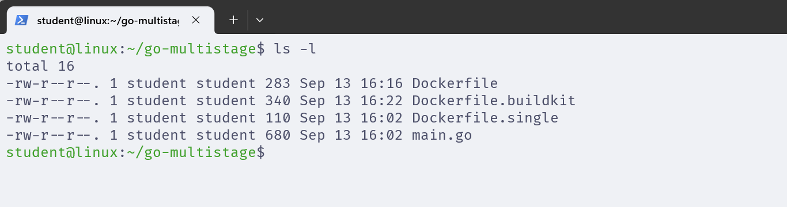
Step 3: Build with BuildKit caching
DOCKER_BUILDKIT=1 docker build -t go-buildkit -f Dockerfile.buildkit .
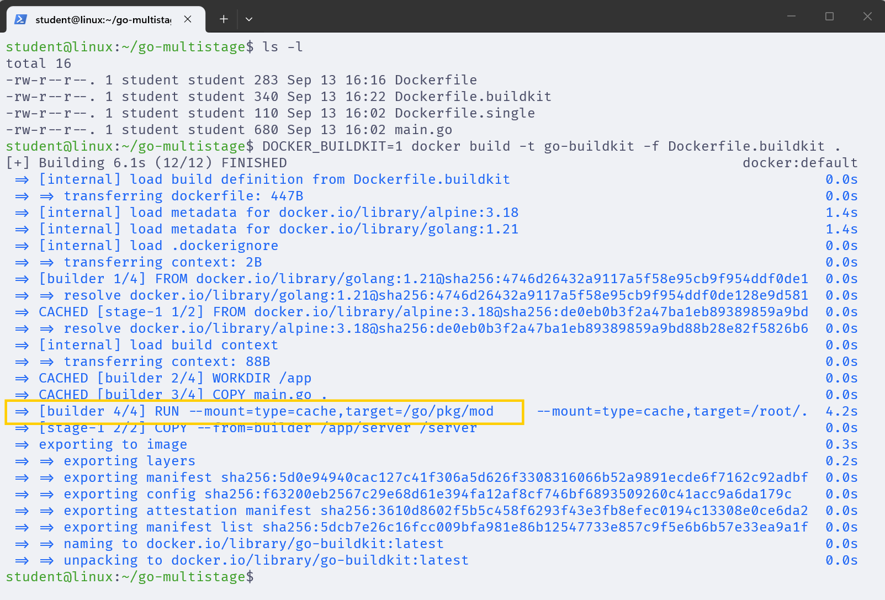
time docker build -t go-buildkit-cache -f Dockerfile.buildkit .
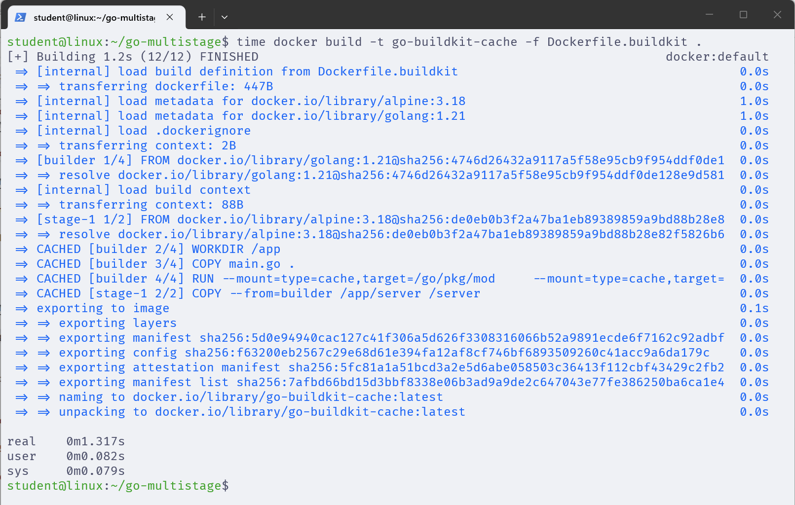
Note: Second build is faster due to BuildKit cache mounts
Step 4: Use build secrets with --mount=type=secret
echo "my-api-key-12345" > api-key.txt
cat > Dockerfile.secret << 'EOF'
FROM alpine:3.18
# Copy secret during build (not in final image)
RUN --mount=type=secret,id=apikey \
cat /run/secrets/apikey > /tmp/key.txt
# Verify secret is not in final layer
RUN rm /tmp/key.txt
CMD ["echo", "Secret build completed"]
EOF
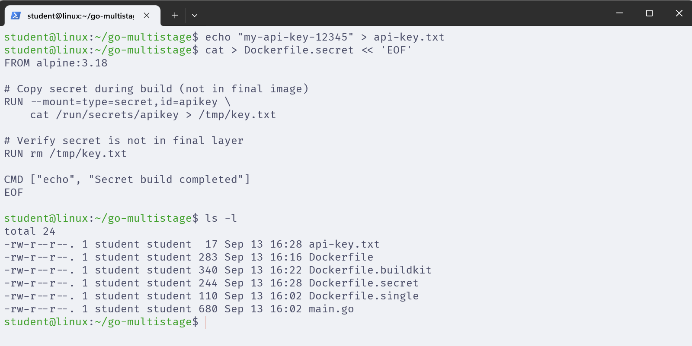
DOCKER_BUILDKIT=1 docker build --secret id=apikey,src=api-key.txt -t go-secret .
Step 5: Verify secret not in image
docker history go-secret
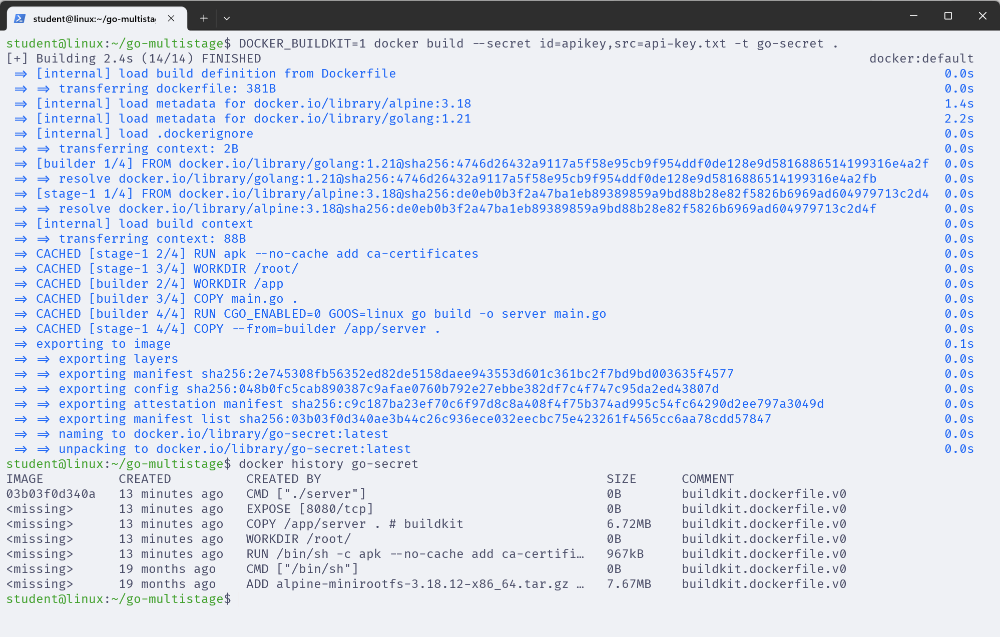
Note: Secret is not visible in image history
Lab 1.3: Image Analysis
Step 1: Use docker history to inspect layers
docker history go-multi
docker history go-single
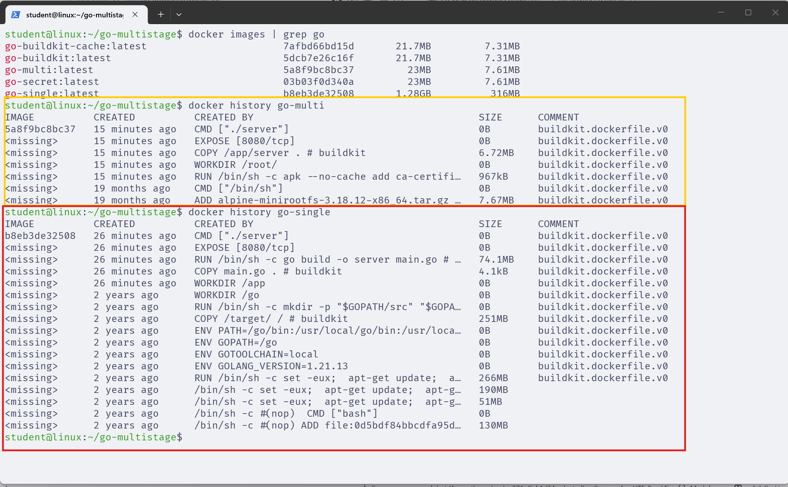
🧠 Try to answer Questions to Remember the Concept
Here are three questions designed to make the concept stick by connecting it to the data you just saw:
❓ Question 1: The "Why the Gap?" Question
Your go-single image shows 1.28 GB disk usage but only 316 MB content size. Where did the other ~960 MB go?
Hint to remember: Think about compression. Content Size = compressed (what travels over the network). Disk Usage = uncompressed (what sits on your filesystem after
docker pullunpacks it).
❓ Question 2: The "Spot the Culprit" Question
Looking at docker history go-single, which layer is the biggest single contributor to the 1.28 GB, and why is that layer completely absent from go-multi?
Hint to remember: The 251MB
COPY /target/layer is the entire Go toolchain/SDK from thegolangbase image. In a multi-stage build, that whole stage is thrown away — only the compiled binary (COPY /app/server .= 6.72MB) gets carried forward.
❓ Question 3: The "Real-World Tradeoff" Question
If Content Size is what you download and Disk Usage is what you store, which one matters more when you're deploying to 1,000 servers vs. when you're building locally?
Hint to remember: - Content Size → matters for network/CI/CD (faster pulls across many machines, registry storage costs). - Disk Usage → matters for local dev machines and nodes (limited disk, many images cached). - Multi-stage wins on both:
go-multiis 23 MB disk / 7.61 MB content vs.go-singleat 1.28 GB / 316 MB — a ~55× disk and ~40× content reduction.
Step 2: Analyze image with dive tool (if installed)
# Install dive (optional)
# brew install dive (macOS)
# sudo apt-get install dive (Ubuntu)
DIVE_VERSION="0.13.1"
sudo dnf install -y \
"https://github.com/wagoodman/dive/releases/download/v${DIVE_VERSION}/dive_${DIVE_VERSION}_linux_amd64.rpm"
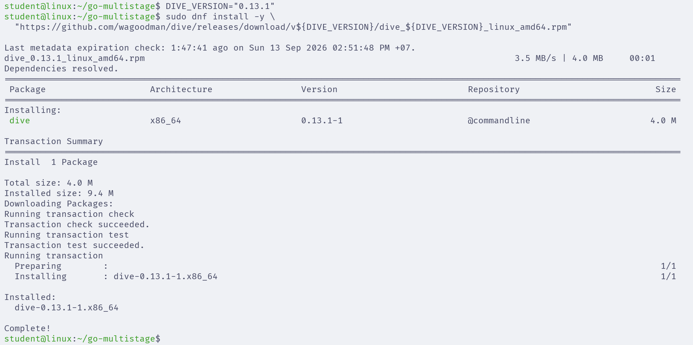
# Analyze image
dive go-multi
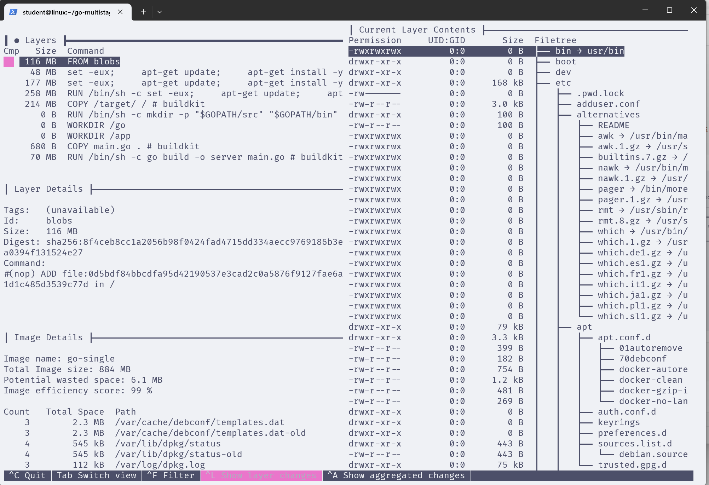
🧠Try to Answer Questions on the dive Command
Here are two questions designed to help you remember what dive does and why it's useful.
❓ Question 1: The "What Does It Show?" Question
When you run dive go-single:latest, you see two panes: layers on the left and a file tree on the right. What specific insight does dive give you that docker history and docker images cannot?
Hint to remember: -
docker images→ only shows total disk/content size. -docker history→ shows the size of each layer (the command that created it). -dive→ shows what files are inside each layer, so you can pinpoint exactly which files are bloating the image (e.g., the entire Go SDK,aptcaches,.gitfolders, test files).Memory hook: "
docker historytells you how big each layer is.divetells you why it's big."
❓ Question 2: The "Efficiency Score" Question
dive gives your image an "Image Efficiency Score" (a percentage) and flags "wasted space." What do these two metrics actually measure, and what would a low score tell you to fix?
Hint to remember: - Efficiency Score = ratio of useful files (those present in the final layer) vs. total files ever added across all layers. - Wasted Space = files added in an earlier layer, then deleted or overwritten in a later layer (they still bloat the image). - Low score → fix by: 1. Using multi-stage builds (throw away the builder). 2. Combining
RUNcommands (e.g.,apt-get install && rm -rf /var/lib/apt/lists/*). 3. Adding.dockerignoreto keep junk out ofCOPY.Memory hook: "A 100% efficient image has zero wasted bytes — every file added survives to the final layer."
🔑 Combined memory hook:
"
dive= X-ray for your image. It shows the bones (layers), the organs (files), and the fat (wasted space)."
Want me to walk through a real dive session on your go-single vs go-multi images to see this in action?
Step 3: Optimize .dockerignore
cat > .dockerignore << 'EOF'
.git
.gitignore
*.md
*.txt
api-key.txt
Dockerfile*
docker-compose*
.vscode
.idea
node_modules
__pycache__
*.pyc
EOF
Step 4: Rebuild with optimized .dockerignore
DOCKER_BUILDKIT=1 docker build -t go-optimized .
docker images go-optimized
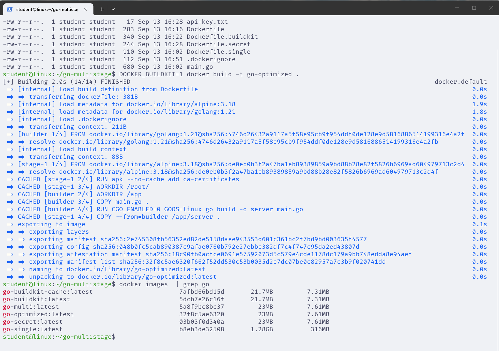
without .dockerignore
Your folder (200 MB) → [pack everything] → BuildKit receives 200 MB
↓
Filters nothing, transfers everything
with .dockerignore
Your folder (200 MB) → [filter patterns] → BuildKit receives 5 MB
↓
Only relevant files transferred
Workshop 2: Container Internals
Lab 2.1: Understanding Overlay Filesystem
Step 1: Run container and examine filesystem
docker run -it --name overlay-test quay.io/centos/centos:stream10 /bin/bash
Step 2: View overlay mount points (inside container)
mount | grep overlay
cat /proc/mounts | grep overlay
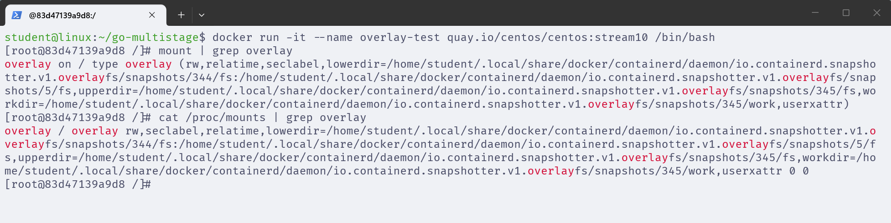
let break down output
overlay on / type overlay (
rw,
relatime,
seclabel,
lowerdir=<lower1>:<lower2>,
upperdir=<upper>,
workdir=<work>,
userxattr
)
Step 3: Create files in container
mkdir -p /test
echo "container file" > /test/file.txt
cat /test/file.txt
Step 4: Exit and examine layers (on host)
exit
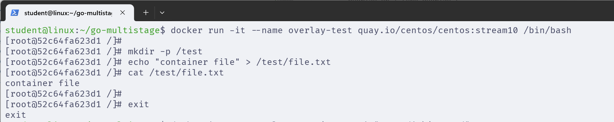
# run on host. Start container again
docker start overlay-test
docker ps
# Find container layer (on host)
cat /proc/$(docker inspect -f '{{.State.Pid}}' overlay-test)/mountinfo | grep overlay
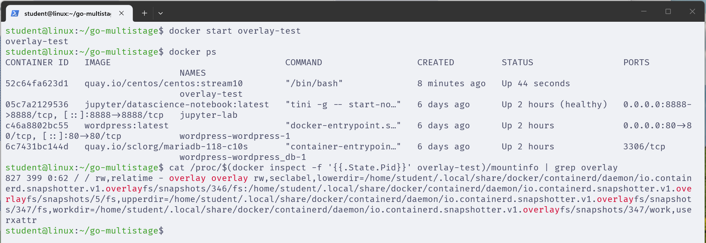
- explain output
827 399 0:62 / / rw,relatime - overlay overlay rw,seclabel, lowerdir= /home/student/.local/share/docker/containerd/daemon/io.containerd.snapshotter.v1.overlayfs/snapshots/346/fs : /home/student/.local/share/docker/containerd/daemon/io.containerd.snapshotter.v1.overlayfs/snapshots/5/fs, upperdir= /home/student/.local/share/docker/containerd/daemon/io.containerd.snapshotter.v1.overlayfs/snapshots/347/fs, workdir= /home/student/.local/share/docker/containerd/daemon/io.containerd.snapshotter.v1.overlayfs/snapshots/347/work, userxattr
Container sees: /test/file.txt ✅ (unified view)
┌──────────────────────────────────────┐
│ merged (/) in container │
└──────────────────────────────────────┘
▲
┌───────────┼───────────┐
│ │ │
┌────▼────┐ ┌────▼────┐ ┌────▼────┐
│ 347/fs │ │ 346/fs │ │ 5/fs │
│upperdir │ │lowerdir │ │lowerdir │
│ (RW) │ │ (RO) │ │ (RO) │
│ │ │ │ │ │
│ /test/ │ │ (empty) │ │ (empty) │
│ file.txt│ │ │ │ │
└─────────┘ └─────────┘ └─────────┘
▲
YOUR WRITES
go here
🧠 Summary Lab Step 4 Now Complete
| Lab Question | Answer |
|---|---|
Where is upperdir? |
.../snapshots/347/fs |
Where are lowerdirs? |
.../snapshots/346/fs and .../snapshots/5/fs |
Where is workdir? |
.../snapshots/347/work |
Why doesn't docker inspect show these? |
Modern Docker uses the containerd snapshotter, which hides internal paths behind Storage.RootFS.Snapshot.Name |
| How to get them anyway? | cat /proc/$(docker inspect -f '{{.State.Pid}}' <name>)/mountinfo \| grep overlay |
🎓 Bonus: Why userxattr Appears
The userxattr mount option means your Docker is running in rootless mode (or with user-namespace remapping). Instead of storing overlay metadata in trusted.* xattrs (which requires root), it stores them in user.* xattrs — accessible to unprivileged users.
That's why your paths live under ~/.local/share/docker/ instead of /var/lib/docker/. ✅
Step 5: View layer contents (this will confuse if student run in rootmode, use ai to help)
# Find the overlay directory root mode
sudo ls -la /var/lib/docker/overlay2/
# Find the overlay directory root less
# The real Docker data root (rootless)
ls -la ~/.local/share/docker/
# Where layers actually are
ls ~/.local/share/docker/containerd/daemon/io.containerd.snapshotter.v1.overlayfs/snapshots/
# Your container's config + logs
ls ~/.local/share/docker/containers/
# Where to find images
ls ~/.local/share/docker/containerd/daemon/io.containerd.content/
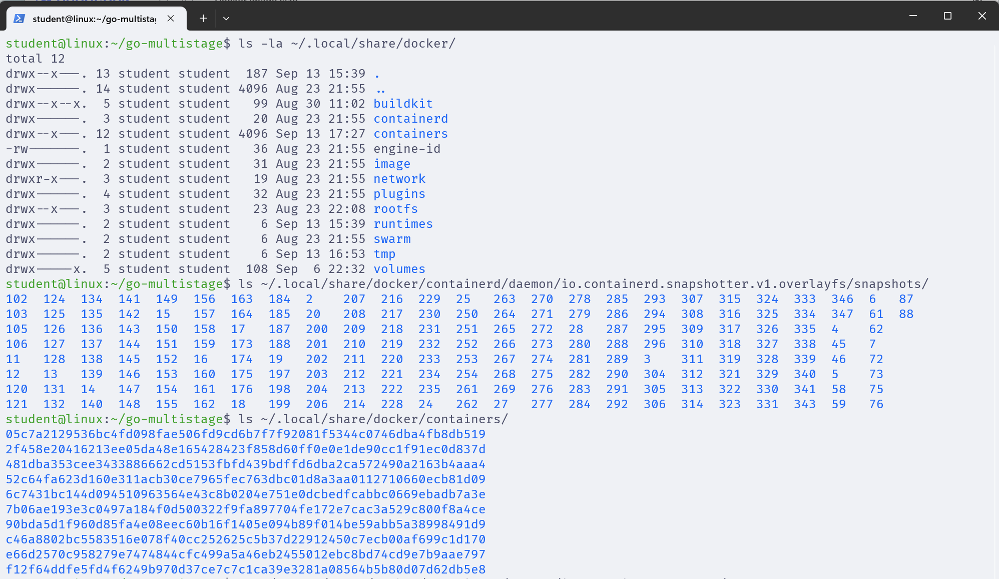
Step 6: Compare container vs image layers
docker diff overlay-test
docker commit overlay-test overlay-test-snapshot
docker history overlay-test-snapshot
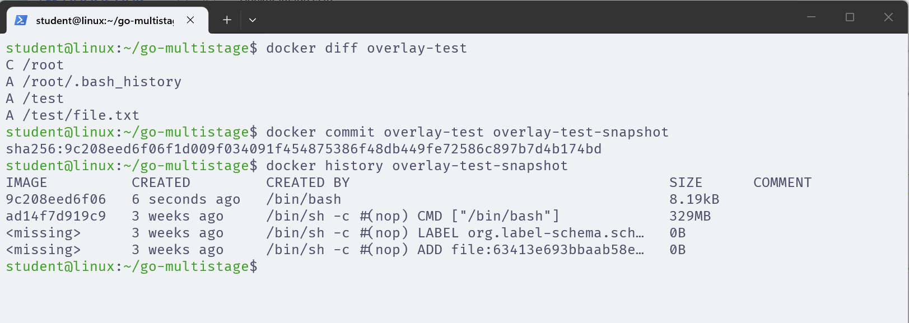
Lab 2.2: Resource Limits
Step 1: Run container with memory limit
docker run -d --name memory-limit \
--memory=256m \
quay.io/centos/centos:stream10 \
tail -f /dev/null
docker stats memory-limit --no-stream
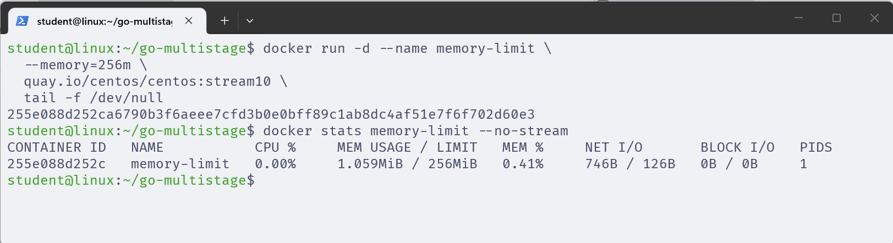
Step 2: Run container with CPU limit
docker run -d --name cpu-limit \
--cpus=0.5 \
quay.io/centos/centos:stream10 \
tail -f /dev/null
docker stats cpu-limit --no-stream
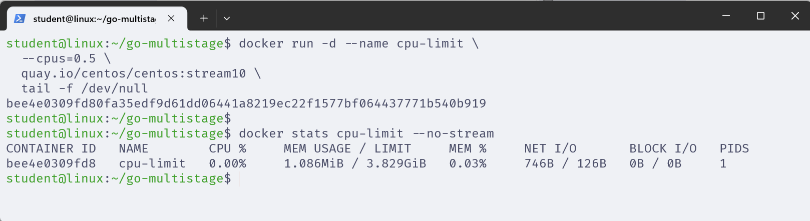
Step 3: Run container with PID limit
docker run -d --name pid-limit \
--pids-limit=50 \
quay.io/centos/centos:stream10 \
tail -f /dev/null
# Test PID limit (optional - may fail)
docker exec pid-limit sh -c 'for i in $(seq 1 100); do sleep 100 & done'
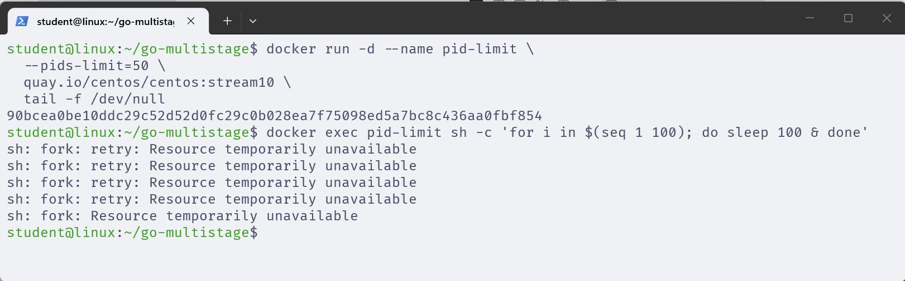
Step 4: Monitor resource usage
docker stats --no-stream
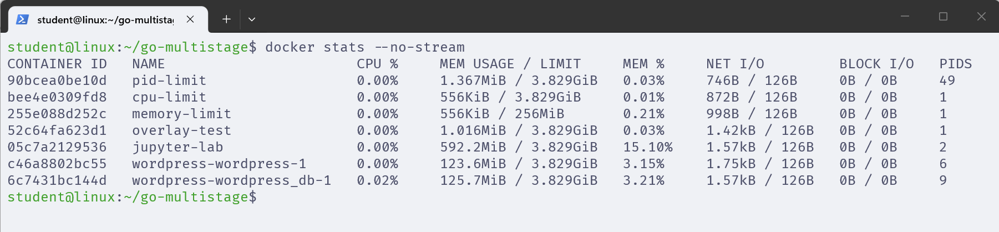
Step 5: Combine resource limits
docker run -d --name combined-limit \
--memory=128m \
--cpus=0.25 \
--pids-limit=25 \
quay.io/centos/centos:stream10 \
tail -f /dev/null
docker stats combined-limit --no-stream
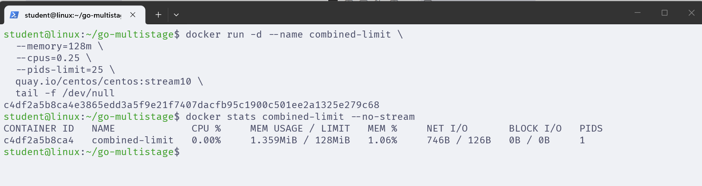
Lab 2.3: Container Inspection
Step 1: Use docker inspect
docker inspect combined-limit
docker inspect --format='{{.HostConfig.Memory}}' combined-limit
docker inspect --format='{{.HostConfig.NanoCpus}}' combined-limit
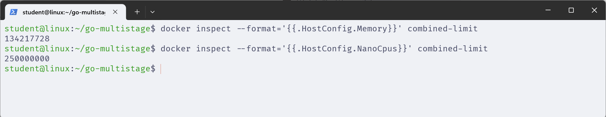
Step 2: View container logs
docker logs overlay-test
docker logs -f overlay-test # Follow logs , keep listen, Ctrl+C to exit
docker logs --tail 10 overlay-test # Last 10 lines
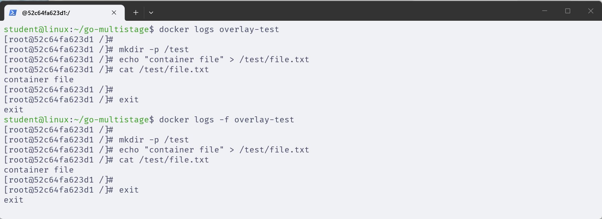
Step 3: Use docker stats with
docker stats --no-stream --format "table {{.Name}}\t{{.CPUPerc}}\t{{.MemUsage}}"
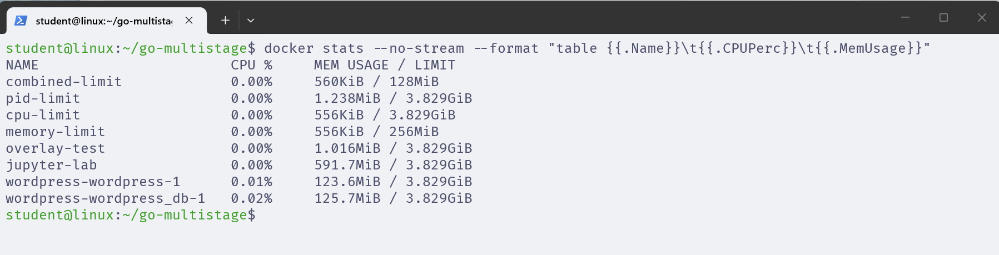
Step 4: Use docker top
docker top combined-limit
docker top combined-limit -o pid,comm
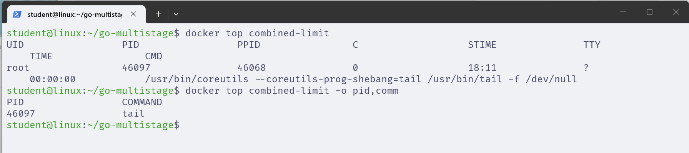
Step 5: Use docker diff
docker exec combined-limit touch /tmp/test-file
docker diff combined-limit
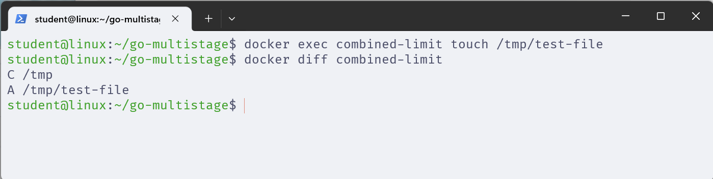
Workshop 3: Advanced Networking
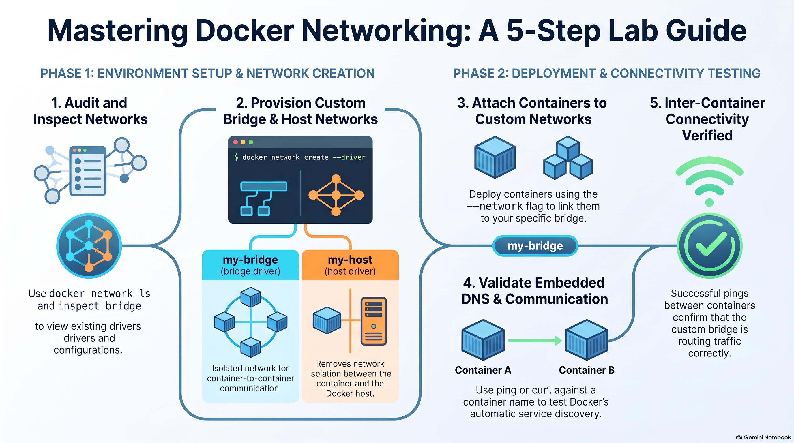
Lab 3.1: Docker Network Types
Step 1: List default networks
docker network ls
docker network inspect bridge
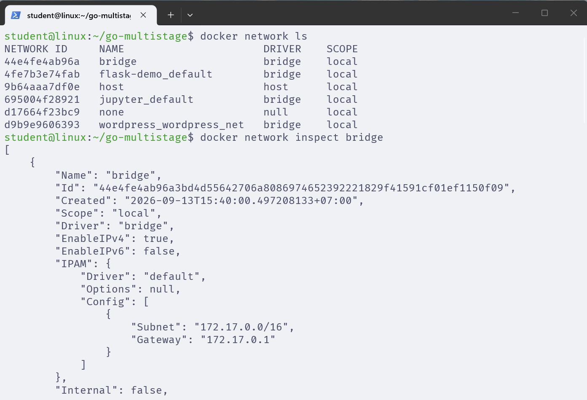
Step 2: Create bridge network
docker network create --driver bridge my-bridge
docker network ls | grep my-bridge
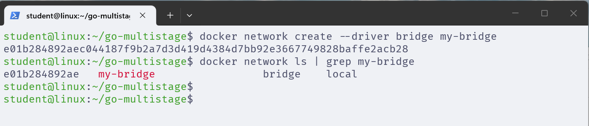
Step 3: Create host network
docker network create --driver host my-host
docker network ls | grep my-host
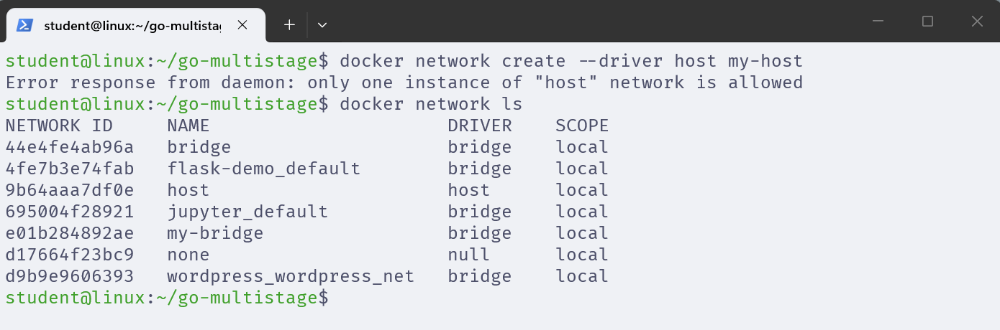
Step 4: Connect containers to custom network
# Run 2 containers on custom network
docker run -d --name net-test-1 --network my-bridge quay.io/centos/centos:stream10 tail -f /dev/null
docker run -d --name net-test-2 --network my-bridge quay.io/centos/centos:stream10 tail -f /dev/null
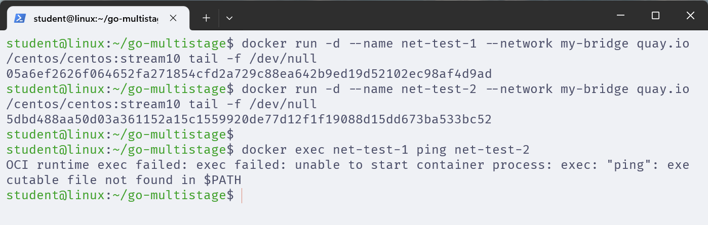
no ping command: run
docker exec -it net-test-1 bash -c "dnf install -y iputils && ping -c 3 net-test-2"
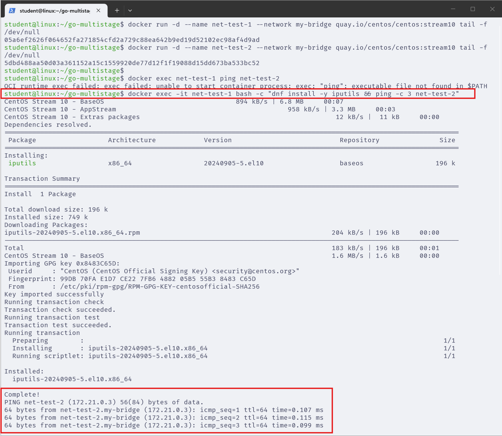
Step 5: Test inter-container communication
# Test DNS resolution
docker exec net-test-1 ping net-test-2
# Test connectivity
docker exec net-test-1 curl net-test-2
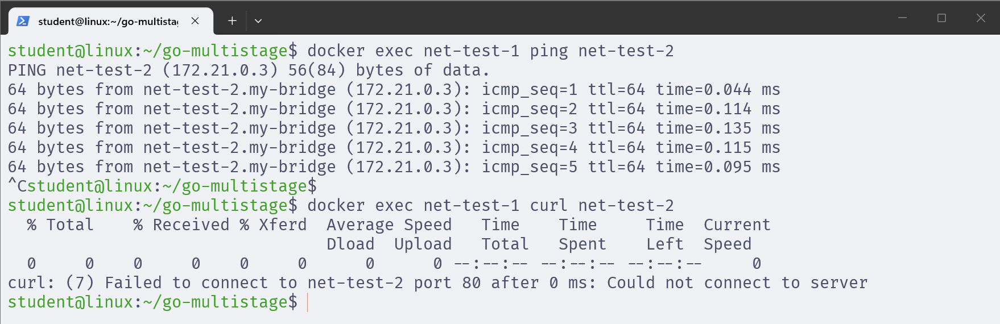
Lab 3.2: Port Mapping and Exposing
Step 1: Run container with -p flag
docker run -d --name port-test -p 8080:80 quay.io/sclorg/httpd-24-c10s
curl http://localhost:8080
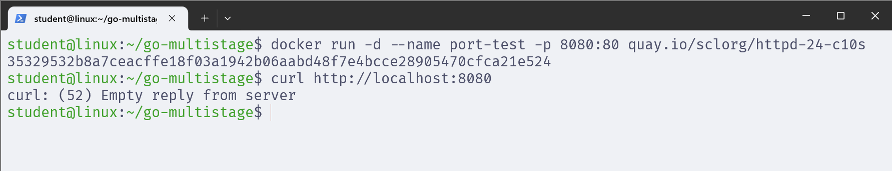
Step 2: Run container with -P flag
docker run -d --name port-random -P quay.io/sclorg/httpd-24-c10s
docker port port-random
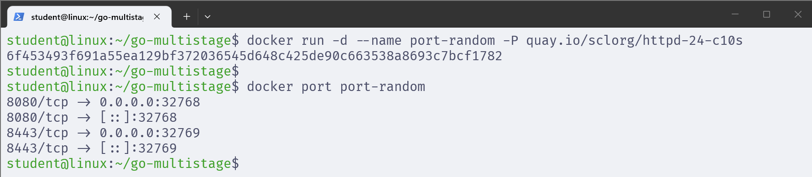
Step 3: Use docker port command
docker port port-test
docker port port-test 80
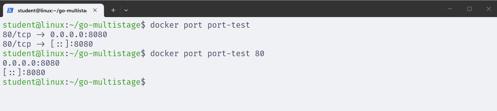
Step 4: Configure port forwarding
# Bind to specific interface
docker run -d --name port-bind-2 -p 127.0.0.1:9092:80 quay.io/sclorg/httpd-24-c10s
curl http://127.0.0.1:9092
Lab 3.3: Upload Image to Docker Hub
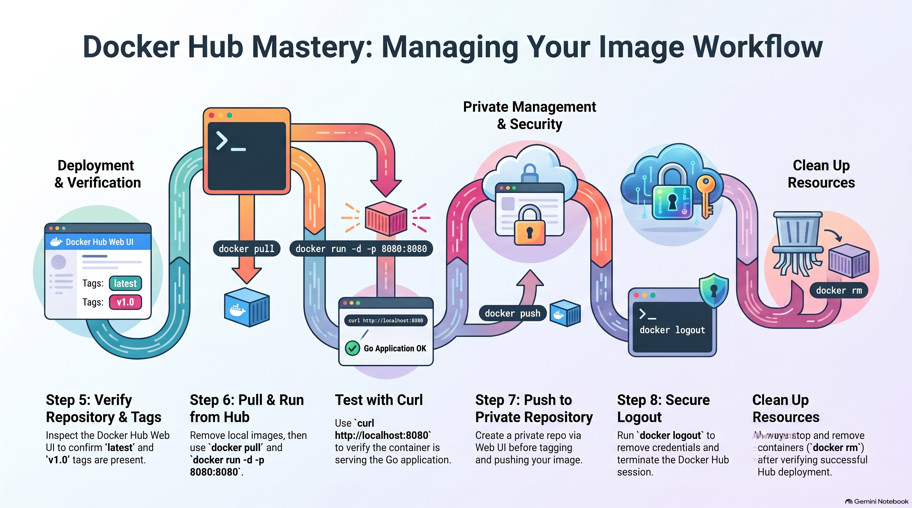
Step 1: Create a Docker Hub account
Go to https://hub.docker.com and sign up for a free account.
Note your Docker Hub username (e.g., myuser).
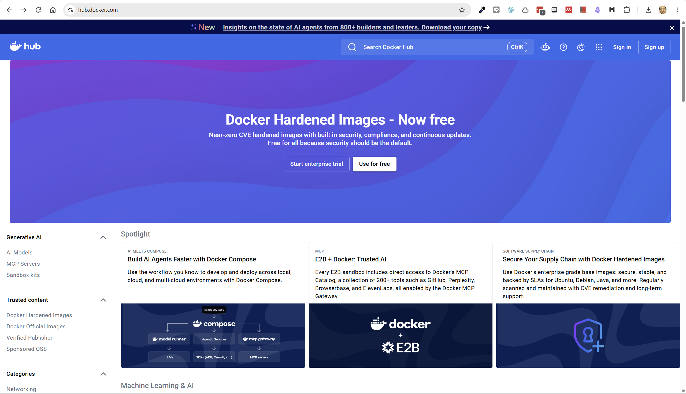
Step 2: Login to Docker Hub from CLI
docker login
# Enter your Docker Hub username
# Enter your Docker Hub password or access token
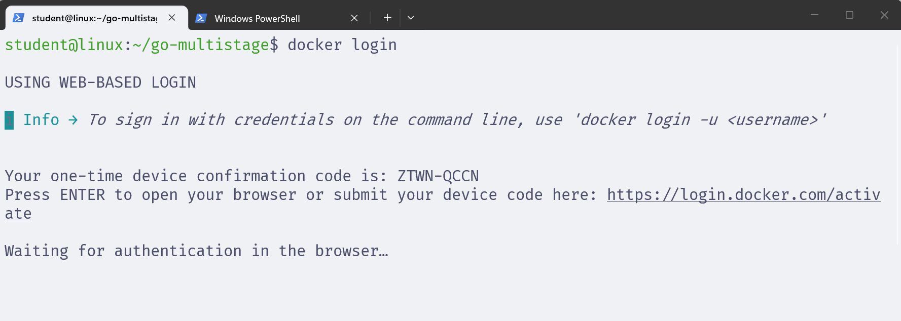
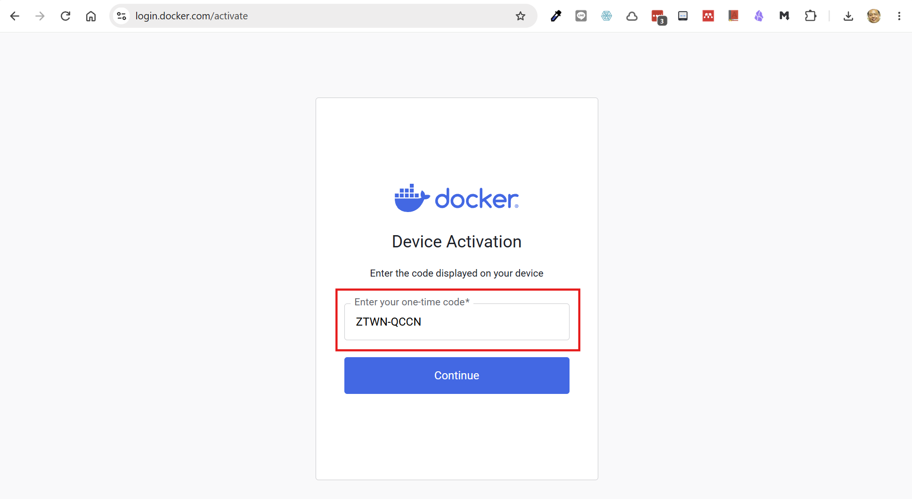
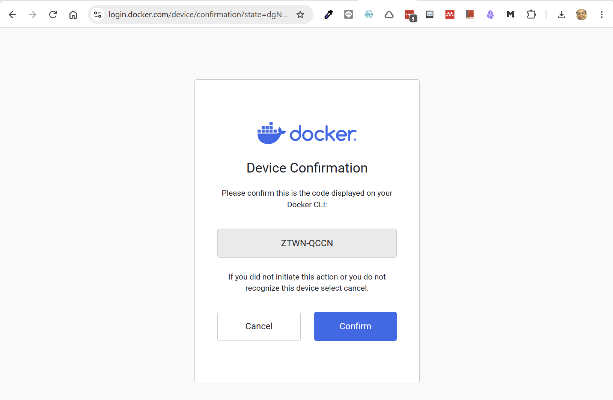
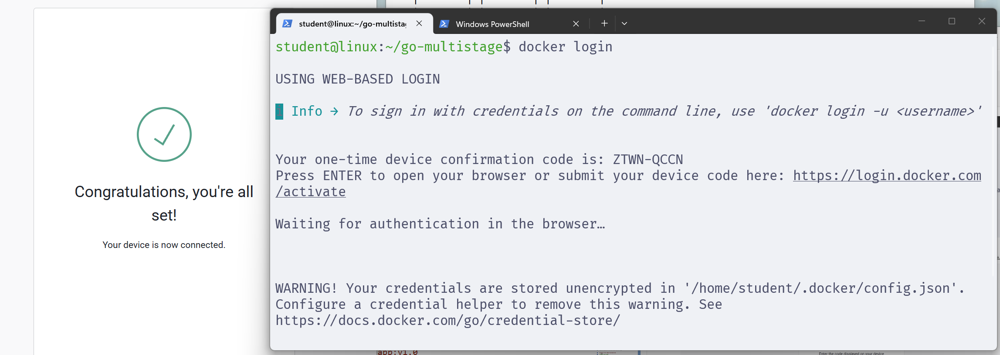
Note: A successful login shows
Login Succeeded
student also log in to website:
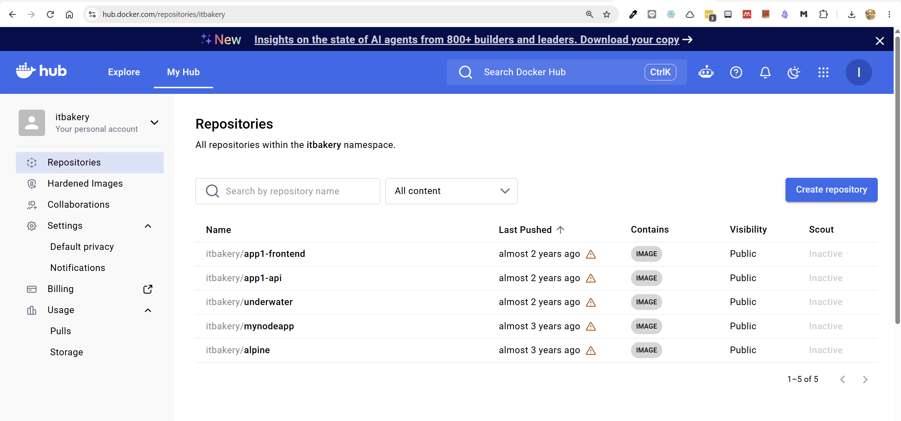
Step 3: Tag your image for Docker Hub
# Tag the Go app image from previous lab
docker tag go-multi <your-username>/go-app:latest
docker tag go-multi <your-username>/go-app:v1.0
# Verify tags
docker images | grep <your-username>
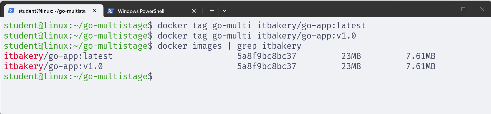
Note: Replace
<your-username>with your actual Docker Hub username.
Step 4: Push image to Docker Hub
# Push latest tag
docker push <your-username>/go-app:latest
# Push version tag
docker push <your-username>/go-app:v1.0
Note: First push may take a few minutes depending on image size and network speed.
Step 5: Verify on Docker Hub
Go to https://hub.docker.com/repositories
Your image should appear under your repositories.
Check the Tags tab to see both latest and v1.0 tags.
Click image name, will show each of version of image
Step 6: Pull image from Docker Hub
# Remove local image
docker rmi <your-username>/go-app:latest <your-username>/go-app:v1.0
# Pull from Docker Hub
docker pull <your-username>/go-app:latest
# Run the pulled image
docker run -d --name hub-app -p 8080:8080 <your-username>/go-app:latest
curl http://localhost:8080
- image above show how to fix error too.
# Cleanup
docker stop hub-app
docker rm hub-app
Step 7: Push a private image
create private repository
- Dont forget to select private
# Create a private repository on Docker Hub (via web UI)
# Then tag and push
docker tag go-multi <your-username>/go-app-private:latest
docker push <your-username>/go-app-private:latest
Note: Free accounts can have 1 private repository. Upgrade for more.
Step 8: Logout from Docker Hub
docker logout
--- ## Lab end here ---
Reading Note: Docker Advanced Commands (options)
Advanced Docker Commands Cheat Sheet
| Command | Purpose |
|---|---|
docker buildx build |
Build with BuildKit builder |
docker buildx ls |
List available builders |
docker system df |
Show Docker disk usage |
docker system prune |
Remove unused data |
docker system prune -a |
Remove all unused data |
docker inspect |
Return container/image details |
docker stats |
Display resource usage |
docker top |
Display running processes |
docker diff |
Inspect changes in container |
docker logs |
Fetch container logs |
docker port |
List port mappings |
docker network ls |
List networks |
docker network inspect |
Inspect network details |
docker scout cves |
Scan for vulnerabilities |
Quiz
❓ question "Question 1: What is the benefit of multi-stage builds?" Answer:
Multi-stage builds reduce final image size by separating build dependencies from runtime dependencies. The build stage contains compilers and tools, while the final stage contains only the application and minimal runtime.
❓ question "Question 2: How do you enable BuildKit?" Answer:
Set the environment variable `DOCKER_BUILDKIT=1` or configure Docker daemon with BuildKit enabled.
❓ question "Question 3: What is the overlay filesystem in Docker?" Answer:
Overlay filesystem (overlay2) is a union filesystem that combines multiple directories (layers) into a single unified view. Docker uses it to efficiently store container layers with Copy-on-Write (CoW).
❓ question "Question 4: How do you limit container memory?" Answer:
Use the `--memory` flag: `docker run --memory=256m image_name`
❓ question "Question 5: What is the difference between -p and -P?" Answer:
`-p` maps specific host port to container port (e.g., `-p 8080:80`), while `-P` publishes all exposed ports to random host ports.
❓ question "Question 6: How do you create a custom Docker network?" Answer:
Use `docker network create --driver bridge network_name`
❓ question "Question 7: What is the purpose of .dockerignore?" Answer:
`.dockerignore` excludes files and directories from the build context, reducing build time and preventing sensitive files from being copied into the image.
❓ question "Question 8: How do you run a container with CPU limits?" Answer:
Use the `--cpus` flag: `docker run --cpus=0.5 image_name` (limits to 50% of one CPU core)
❓ question "Question 9: What is a Docker private registry?" Answer:
A private registry is a self-hosted Docker image storage service that allows you to store and distribute Docker images privately within your organization.
❓ question "Question 10: How do you inspect container resource limits?" Answer:
Use `docker inspect --format='{{.HostConfig.Memory}}' container_name` or `docker stats` for real-time monitoring.